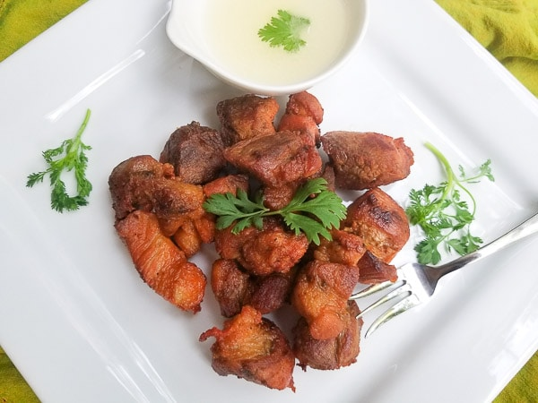

Carne Frita

Description
Carne Frita are delicious pork chunks that are seasoned and marinated in Puerto Rican spices and then fried to
golden perfection. Served with a delicious garlic sauce. Carne Frita can be served in several dishes for
complete meals or as an appetizer.
Ingredients
- 2 pounds pork shoulder or Pork Butt
- 1 packet (envelope) of Sazon with Annatto
- 1 teaspoon Adobo Seasoning (I use Goya Brand)
- 1 teaspoon oregano
- 4-6 garlic cloves
- 3 tablespoons of vegetable oil
- 1/3 cup of vinegar
- vegetable oil for frying
Steps
- Peel garlic cloves and add to a blender with oregano and 3 tablespoons of vegetable oil. Set aside.
- Rinse pork and cut up pork into 1 1/2 inch chunks. (Keep the fat on pork as this makes the pork tastier and
juicer). Season with adobo, sazon, garlic and oregano puree and vinegar. Mix pieces with your hands or a
spoon. Marinate covered for 30 minutes in the refrigerator or overnight (especially if using pork shoulder)
- Heat a large pan over medium high heat with about 2 inches of oil. Wait to oil is hot, about 5 minutes.
- Carefully add a few pork pieces at a time to the pan being careful not to drop pieces in oil and causing oil
to
splatter.
- Cook the pork chunks on one side for 5-7 minutes and then flip over with a fork.
Cook again for another 5-7 minutes.
Note: If serving with the garlic dipping sauce, prepare sauce while pieces are cooking. Add 2 garlic
cloves to a blender with 1/4 cup oil and blend until smooth. Set aside.
- Continue cooking on all sides until all sides are beautifully golden brown.
- Drain pieces on paper towels to remove excess oil.
- Serve with Garlic Dipping Sauce and toothpicks if serving as an appetizer.